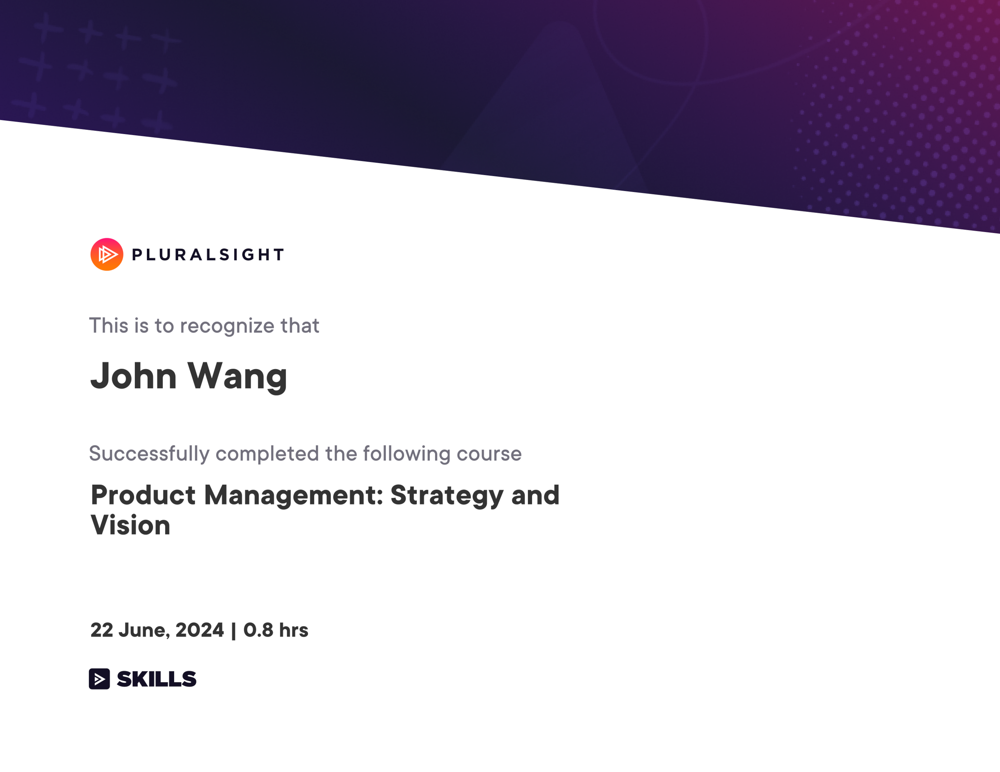
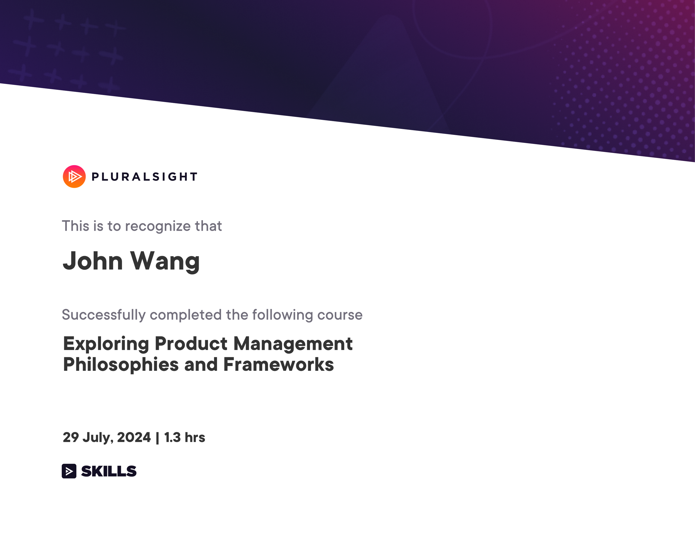
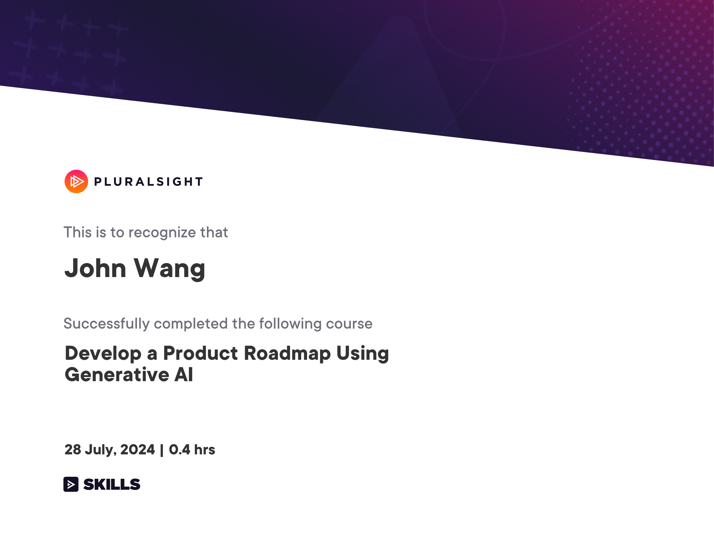
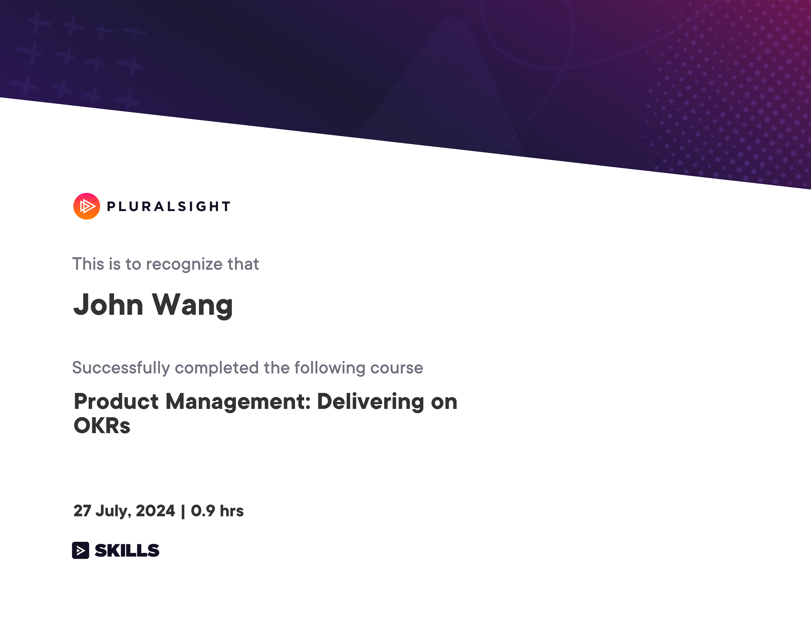
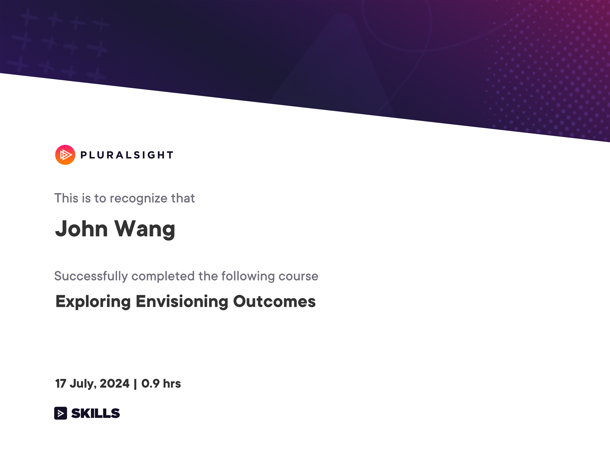
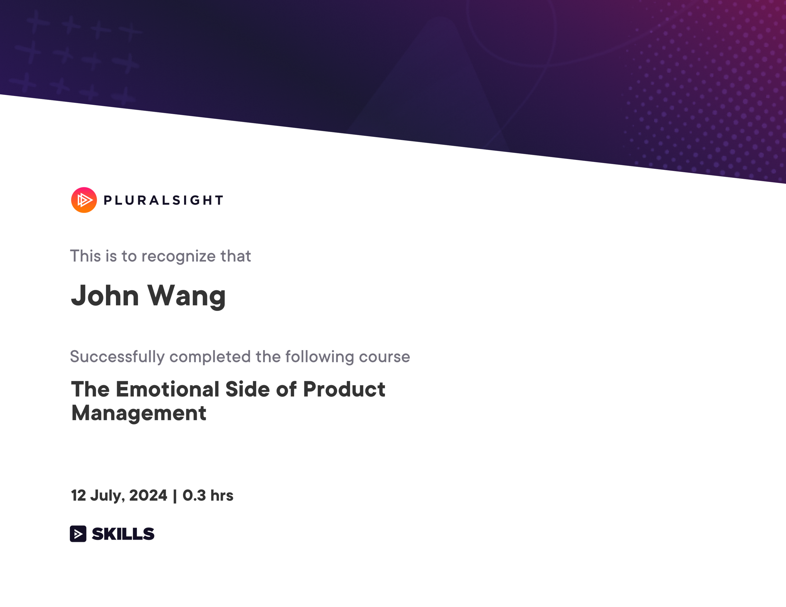
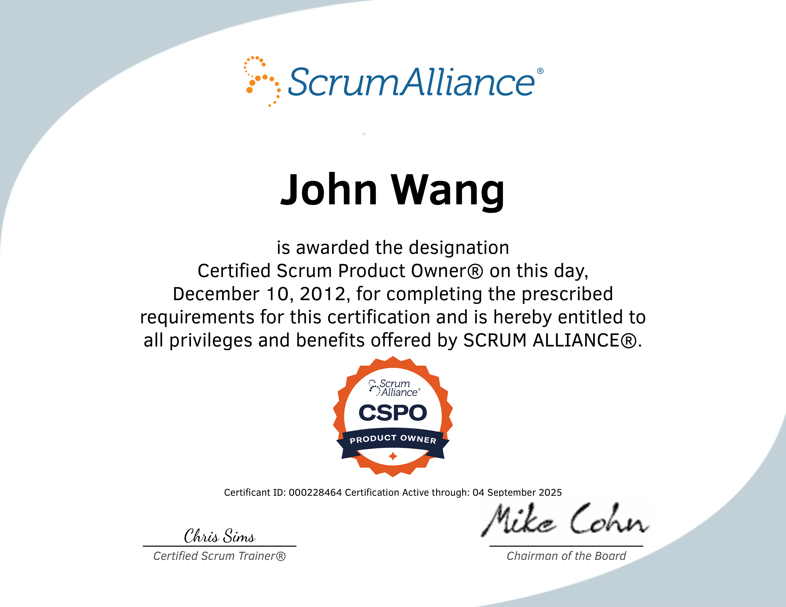
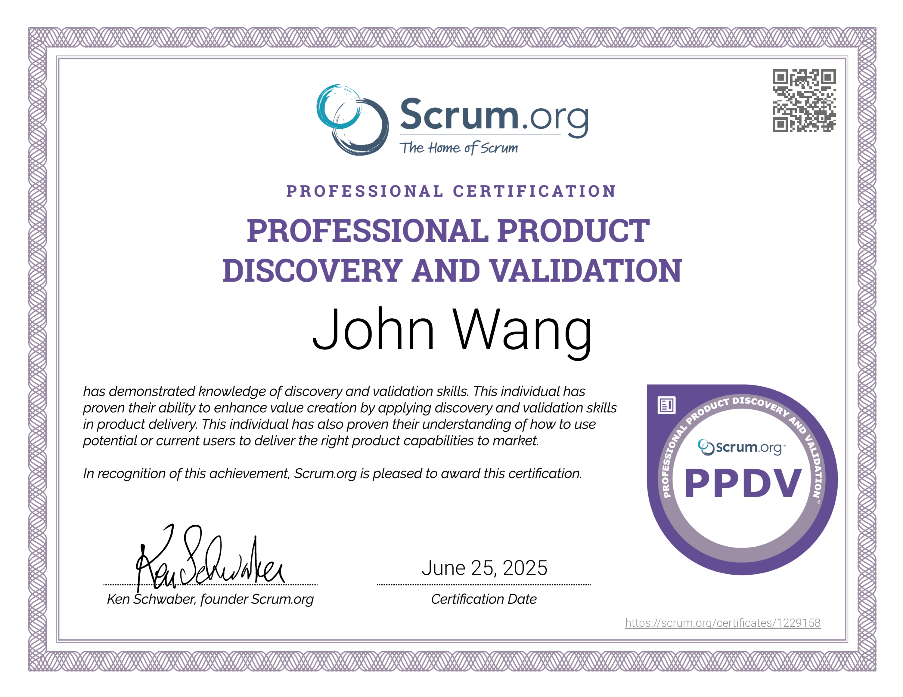
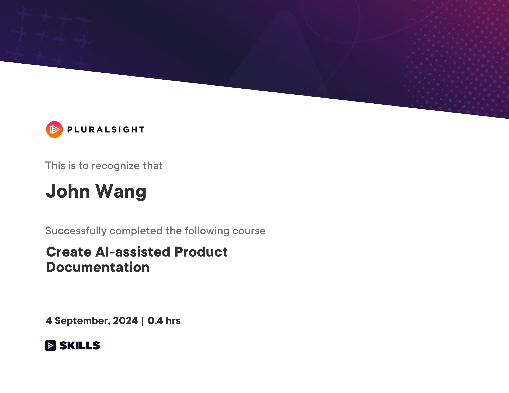

John's Product Management Certificates
- Strategy
- Frameworks
- Roadmap
- Outcomes
- Product-Led Growth (PLG)
- Artificial Intelligence
- Artificial Intelligence: ML
- Product Craft
- Product Owner
- Certified Scrum Product Owner (CSPO) from Scrum Alliance
- Professional Scrum Product Owner I (PSPO I) from Scrum.org
- Professional Product Discovery and Validation™ (PPDV) from Scrum.org
- Scrum Product Owner Accredited Certification (SPOAC) from Scrum Institute
- Certified DevOps Product Owner (DevOps-PO) from DevOps Academy
- Becoming a Great Product Owner from Pluralsight by Jeremy Jarrell
- Documentation
Strategy (1)
Product Management: Strategy and Vision from Pluralsight by Jeremy Jarrell

Frameworks (3)
Customer-Centric IT Strategy from University of Virginia, Darden School by Alex Cowan

The Strategist's Challenge from University of Virginia, Darden School Foundation by Michael Lenox, Jared Harris

Exploring Product Management Philosophies and Frameworks from Pluralsight by Dave Masom

Roadmap (1)
Develop a Product Roadmap Using Generative AI from Pluralsight by Harit Himanshu

Outcomes (3)
Certified Professional In OKR (Objectives & Key Results) (CPOKR) from Scrum Institute by Yeliz Obergfell

Product Management: Delivering on OKRs from Pluralsight by Keisha Johnson

Exploring Envisioning Outcomes from Pluralsight by Lauren Gray

Product-Led Growth (PLG) (1)
Product-Led Fundamentals from ProductLed

Artificial Intelligence (3)
Artificial Intelligence Micro-Certification (AIC) from Product School by Sam Stevens

AI for Product Management from Pendo

AI Product from Great Learning Academy by Abhinanda Sarkar

Artificial Intelligence: ML (1)
Machine Learning Foundations for Product Managers from Duke University by Jon Reifschneider

Product Craft (1)
The Emotional Side of Product Management from Pluralsight by Nicole Castillo

Product Owner (6)
Certified Scrum Product Owner (CSPO) from Scrum Alliance



Professional Scrum Product Owner I (PSPO I) from Scrum.org

Professional Product Discovery and Validation™ (PPDV) from Scrum.org

Scrum Product Owner Accredited Certification (SPOAC) from Scrum Institute

Certified DevOps Product Owner (DevOps-PO) from DevOps Academy

Becoming a Great Product Owner from Pluralsight by Jeremy Jarrell

Documentation (1)
Create AI-assisted Product Documentation from Pluralsight by Xavier Morera
